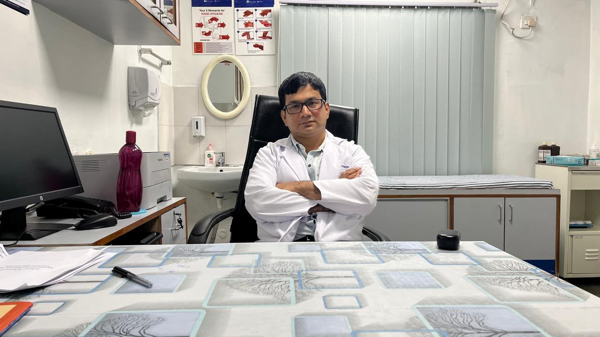

Urology Guide
When Should You See a Urologist?
A urology consultation may be appropriate when urinary or reproductive-system symptoms persist, recur, or need specialist assessment. A urologist can …
Read Article →